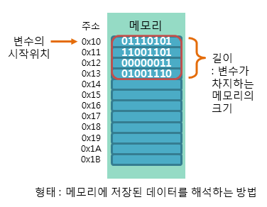

변수
변수(variable)
변수(variable)란 데이터(data)를 저장하기 위해 프로그램에 의해 이름을 할당받은 메모리 공간을 의미합니다.
즉, 변수란 데이터(data)를 저장할 수 있는 메모리 공간을 의미하며, 이렇게 저장된 값은 변경될 수 있습니다.
C언어에서 숫자 표현에 관련된 변수는 정수형 변수와 실수형 변수로 구분할 수 있습니다.
또다시 정수형 변수는 char형, int형, long형 변수로, 실수형 변수는 float형, double형 변수로 나눌 수 있습니다.
또한, 데이터가 저장된 메모리의 주소를 저장하고 처리하는 포인터 변수가 있습니다.
관련된 정보를 한 번에 묶어서 처리하는 사용자 정의 구조체 변수도 있습니다.
변수의 이름 생성 규칙
C언어에서는 변수의 이름을 비교적 자유롭게 지을 수 있습니다.
하지만 변수의 이름은 해당 변수에 저장될 데이터의 의미를 잘 나타내도록 짓는 것이 가장 좋습니다.
C언어에서 변수의 이름을 생성할 때에 반드시 지켜야 하는 규칙은 다음과 같습니다.
1. 변수의 이름은 영문자(대소문자), 숫자, 언더스코어(_)로만 구성됩니다.
2. 변수의 이름은 숫자로 시작될 수 없습니다.
3. 변수의 이름 사이에는 공백을 포함할 수 없습니다.
4. 변수의 이름으로 C언어에서 미리 정의된 키워드(keyword)는 사용할 수 없습니다.
다음 표는 변수의 이름을 생성할 때에 지겨야하는 규칙의 예시입니다.
| 변수의 이름이 올바른 경우 | 변수의 이름이 잘못된 경우 | 잘못된 이유 |
|---|---|---|
| int tcp | int t!cp* | 변수 이름이 영문자,숫자, _ 외에 특수문자 사용하였음 |
| int school | int 6school | 변수 이름이 숫자로 시작하였음 |
| int tcpschool | int tcp school | 변수 이름 tcp와 school 사이에 공백이 있음 |
| int int | int int | 변수 이름에 int라는 키워드를 사용하였음 |
ex) int tcp 과 int Tcp 는 같은 변수가 아닙니다.
키워드(Keyword)는 고유한 의미를 가지는 예약어입니다. C언어에는 32개의 키워드가 있으며, 이러한 키워드들은 미국표준협회 ANSI에서 지정한 키워드들 입니다. 아래의 키워드들은 위의 예시처럼 변수의 이름으로 사용할 수 없습니다.
| auto | beak | case | char | const | continue | default |
| do | double | else | enum | extern | float | for |
| goto | if | int | long | register | return | short |
| signed | sizeof | static | struct | switch | typedef | union |
| unsigend | void | volatile | while |
비트(bit)와 바이트(byte)
컴퓨터는 모든 데이터를 2진수로 표현하고 처리합니다.
비트(bit)란 컴퓨터가 데이터를 처리하기 위해 사용하는 데이터의 최소 단위입니다.
이러한 비트에는 2진수의 값(0과 1)을 단 하나만 저장할 수 있습니다.
바이트(byte)란 위와 같은 비트가 8개 모여서 구성되며, 한 문자를 표현할 수 있는 최소 단위입니다.
변수와 메모리 구조
변수는 기본적으로 메모리의 주소(address)를 기억하는 역할을 합니다.
메모리 주소란 물리적인 메모리 공간을 서로 구분하기 위해 사용되는 일종의 식별자입니다.
즉, 메모리 주소란 메모리 공간에서의 정확한 위치를 식별하기 위한 고유 주소를 의미합니다.
변수를 참조할 때는 메모리의 주소를 참조하는 것이 아닌, 해당 주소에 저장된 데이터를 참조하게 됩니다.
따라서 변수는 데이터가 저장된 메모리의 주소뿐만 아니라, 저장된 데이터의 길이와 형태에 관한 정보도 같이 기억해야 합니다.
다음 그림은 메모리 상에 변수가 어떤 식으로 저장되는지를 보여줍니다.

위의 그림처럼 하나의 메모리 공간에는 8개의 비트로 이루어진 1바이트의 데이터가 저장됩니다.
따라서 메모리의 주소 또한 1바이트씩 증가되며, 낮은 주소부터 차례대로 데이터가 저장됩니다.
위의 그림에서 변수의 길이가 총 4개의 메모리 공간을 포함하므로, 해당 변수에는 4바이트의 데이터가 저장되어 있습니다.
이때 변수의 이름은 첫 번째 메모리 주소인 0x10만을 가리키게 됩니다.
따라서 변수의 길이가 4이며, 변수가 어떤 형태로 구성되는지도 알아야만 해당 변수에서 데이터를 올바르게 참조할 수 있습니다.
변수의 선언
C언어에서는 변수를 사용하기 전에 반드시 먼저 해당 변수를 저장하기 위한 메모리 공간을 할당받아야 합니다.
이렇게 해당 변수만을 위한 메모리 공간을 할당받는 행위를 변수의 선언이라고 부릅니다.
만약 선언되지 않은 변수를 사용하려고 하면, C 컴파일러는 오류를 발생시킵니다.
C언어에서 변수를 선언하는 방법은 다음과 같이 두 가지 방법이 있습니다.
1. 변수의 선언만 하는 방법
2. 변수의 선언과 동시에 초기화하는 방법
변수의 선언만 하는 방법
이 방법은 먼저 변수를 선언하여 메모리 공간만을 할당받고, 나중에 변수를 초기화하는 방법입니다.
C언어에서 변수를 선언하는 방법은 다음과 같습니다.
문법
타입 변수이름;
예제
int num;
...
num = 20;
위의 예제처럼 정수를 저장하기 위한 메모리 공간을 할당받으면, 반드시 해당 타입의 데이터만을 저장해야 합니다.
그렇지 않고 다른 타입의 데이터를 저장할 경우에는 저장된 데이터에 변형 및 손실이 일어날 수도 있습니다.
변수의 초기화란 해당 변수를 사용할 수 있도록 초기값을 설정하는 행위입니다.
초기화되지 않은 변수에는 아무런 의미 없는 값인 쓰레깃값만이 들어가 있습니다.
예제
int num;
printf("%d", num);
위의 예제에서 변수 num은 선언만 하고 아직 초기화되지 않았습니다.
하지만 printf() 함수에서 변수 num을 사용하여 해당 변수에 저장된 값을 출력하려고 하고 있습니다.
이와 같은 경우에 C 컴파일러는 오류를 발생시키지는 않겠지만, 프로그램은 사용자가 의도하지 않은 결과를 출력할 것입니다.
따라서 C언어에서는 초기화되지 않은 변수는 절대로 사용해서는 안됩니다.
변수의 선언과 동시에 초기화하는 방법
C언어에서 변수는 선언과 동시에 그 값을 초기화할 수 있습니다.
또한, 선언하고자 하는 변수들의 타입만 같다면 여러 변수를 동시에 선언할 수도 있습니다.
문법
1. 타입 변수이름[, 변수이름];
2. 타입 변수이름 = 초깃값[, 변수이름 = 초깃값];
예제
int num01, num02;
double num03 = 1.23, num04 = 4.56;